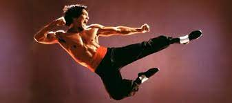
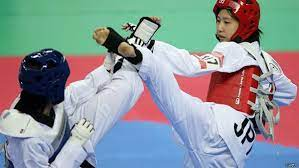
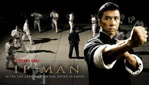
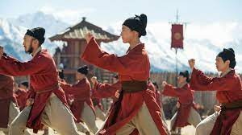
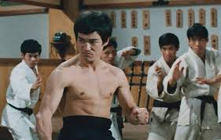

Combate en la antiguedad
Artes Marciales

Las artes marciales es la práctica y desarrollo de habilidades físicas, cuyo objetivo es marcial, es decir, su finalidad es el combate y sus practicantes tienen jerarquías, del mismo modo que un ejercito tiene rangos. Lo que diferencia a las artes marciales de la violencia gratuita y las peleas callejeras, es la organización sistemática de sus técnicas y la adhesión a una filosofía o código de conducta. Hay variados estilos y muchas escuelas de artes marciales, y la mayoría de ellas evita el uso de armamento moderno.
Puesto que el significado estricto de Artes Marciales es ‘artes militares’, este concepto se puede aplicar a todo tipo de lucha cuerpo a cuerpo, ya sea occidental u oriental, y cuyo único requisito es la estructura marcial durante su práctica.
Hoy en día, las artes marciales son consideradas deportes y no una forma de lucha o de organizar un ejército, pero en la antigüedad, las artes marciales eran la forma en que los países orientales entrenaban a sus ejércitos y se preparaban para la guerra. De ahí su estructura marcial y aunque no tengo claro si el término “arte” es el más apropiado para referirse a estas disciplinas de lucha, sí existen varias asociaciones lógicas, como que el arte implica preceptos y reglas comunes para realizar una actividad y además significa, literalmente, la habilidad para hacer algo.
Origen
La historia de las técnicas militares de lucha, con y sin armas, se remonta a los orígenes de la humanidad, pero es a partir del siglo XIX que surge el concepto de artes marciales. En el diccionario Chinese-English Diction de 1882, de Herbert A. Giles, se traduce wǔ yì como ‘artes militares’ y en el Chinese-English Dictionary de 1931, de Mathews, aparece el término wǔ shù. Este vocablo también aparece en otros diccionarios de la época y en otros idiomas, como en el Japanese-English Dictionary, de Takenobu (1920). Sin embargo, las referencias más antiguas, derivan de los caracteres chinos wǔ shù.
El origen de este concepto está relacionado con la irrupción de la era moderna en el este de Asia. Este fenómeno transformó la estructura feudal y provocó la paulatina desaparición de los principios por los que se regía el mundo oriental. Además, el cambio más relevante se debió a la aparición de las armas de fuego, lo que hizo prácticamente inútiles a las formas tradicionales de lucha cuerpo a cuerpo. De esta forma, las artes militares tradicionales perdieron importancia en el tramado social y la defensa del país, y se transformaron en una opción para el desarrollo físico y psíquico de la población.
Como las artes marciales tradicionales son una reinterpretación de las antiguas artes militares usadas en oriente y debido a su gran éxito como ejercicio y deporte, muchas culturas orientales comenzaron a recuperar sus sistemas tradicionales de lucha cuerpo a cuerpo y como parte de ese proceso, también se difundieron otras tradiciones bélicas, como el uso y fabricación de armas.
En la actualidad, la mayoría de las artes marciales van más allá de las aplicaciones físicas e incluyen conocimientos de fisiología y medicina china tradicional. Además poseen un código ético que tiene sus raíces en las filosofías de oriente, como el confucionismo chino, el sintoísmo japonés o el budismo zen.

Historia Egipto, Grecia y Roma
No existe manera de ubicar con exactitud el origen de las artes de combate cuerpo a cuerpo, pero el método más antiguo que se conoce, es la lucha. En las tumbas de Beni Hassan (Egipto) se encuentran pinturas que datan del 2000 a. C. En ellas se muestran luchadores practicando una serie de movimientos, como lanzamientos y sumisiones. También en las tumbas egipcias de Amarna, que datan del 1350 a. C., aparecen pinturas de luchadores egipcios combatiendo con bastones cortos y haciendo uso de protecciones en los antebrazos. En murales de Mesopotamia también aparecen imágenes de personas practicando la lucha.
En Grecia se practicaron tres sistemas de combate, que eran parte de los juegos de Olimpia: el boxeo, la lucha y el pankration. Todos estos métodos y competencias, pueden ser vistos en las diferentes expresiones artísticas griegas. Sin embargo, fue en Esparta donde más se enfatizó la práctica y el desarrollo de las artes militares, y no solo como métodos de lucha cuerpo a cuerpo, sino también el uso de armas y la forma de enfrentar las batallas en la guerra. Por ejemplo, el uso de la falange (formación de combate) le sirvió al ejército griego para la expansión de su imperio.
En la Roma antigua se llevó el deporte de la lucha hasta el extremo, y los combates se transformaron en sangrientos espectáculos públicos, como la lucha de gladiadores en el Coliseo Romano. Sin embargo, estas disciplinas de combate cuerpo a cuerpo fueron principalmente usadas como deporte y espectáculo, pues el ejército romano enfatizaba la pelea en grupos. Por eso, si los gladiadores querían sobrevivir, debían ser expertos en el uso muchas armas y también en el combate a mano desnuda.
Existían dos tipos de gladiadores que destacaban sobre el resto: el tracio y el retiarius. El primero usaba la sica (espada tracia), un yelmo y un escudo rectangular llamado parma, mientras que el retiarius manejaba el tridente, una red y una daga. Y fue para estos guerreros de la arena romana que se escribieron textos con sistemas y técnicas para el uso de estas armas, lo que los transforma, probablemente, en el primer manual de artes marciales de la historia.
China, Corea y Japon

Algunas personas han sugerido que durante la ocupación de India (326 a 321 a. C.) por el emperador Alejandro (356 a 323 a. C.), las técnicas de lucha griega fueron absorbidas por los indios, las que a su vez fueron introducidas en China por el monje Bodhidharma. Sin embargo, esta hipótesis no tiene soporte histórico, pero es aceptada por la mayoría de las escuelas modernas de artes marciales.
La “leyenda” dice que Bodhidharma viajó a China para enseñar el budismo al emperador, pero al llegar al palacio fue expulsado, pues vestía como un mendigo. Pero el monje budista no se rindió, y en su lugar, fue a un templo donde enseñó su filosofía a los monjes que ahí moraban. Sin embargo, la meditación extrema que imponía el budismo, requería un excelente estado físico, por lo que los monjes no pudieron desarrollarla. debido a esto, Bodhidharma decidió primero preparar físicamente a los monjes y para ello creó un sistema de entrenamiento que se basaba en los movimientos de ataque y defensa de ocho animales. Y ese fue el inicio de las artes marciales chinas y aquel templo que acogió al monje, se le conoce como el Monasterio de Shaolin. ¿Les suena?
Por supuesto, no hay registros históricos que avalen esta leyenda, pero no se puede negar que está llena de magia y belleza, al igual que las artes marciales. Sin embargo, existen referencias que ubican a las artes marciales chinas en el 2100 a. C., aunque este hecho no inhabilita el relato de Bodhidharma. La razón de esto, es que las artes militares se desarrollaron como métodos de defensa y ataque, por lo que es lógico suponer que todas las culturas antiguas las crearon y sistematizaron para enfrentar con mayor eficiencia sus conflictos bélicos.
Las Artes Marciales en el siglo XXI
A finales del siglo XX surgieron sistemas híbridos, derivados de las artes marciales tradicionales, esas de China, Japón y Corea y que se enfocan a al deporte o al desarrollo personal y físico del artista marcial. Ejemplos de esto son el el krav magá israelí, el jiu-jitsu brasileño, el Lima Lama polinesio, el kickboxing japonés, el systema ruso, el jeet kune do de Bruce Lee y las artes marciales mixtas o MMA.
En lo personal, me encanta el MMA por encima de cualquier otro deporte de contacto, pero solo para ver, porque no me subo a un ring ni que me paguen. Pero practiqué por muchos años kung-fu y recomiendo la práctica sistemática de cualquiera de estas disciplinas, pues no solo brindan bienestar físico y mental, sino que te dan ese algo más, ese toque ñoño que tanto me gusta… por ejemplo, mi maestro era Miguel Ángel de Luca, el malo de la película Kiltro!! Qué más ñoño que eso. Pueden ver el trailer en los videos de abajo, además de muchos otros videos del tema.
Para cerrar, un listado de libros ñoños sobre estrategia y filosofía militar, obras clásicas de las artes marciales:
- Lao Tse: Dào dé jing.
- Miyamoto, Musashi: El libro de los cinco anillos.
- LTzu, Sun: El arte de la guerra
- Tsunetomo, Yamamoto: Hagakure el código del samurai
- Carl von Clausewitz: De la guerra